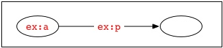
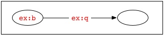
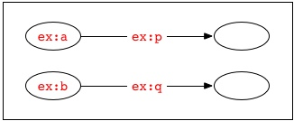
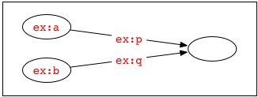
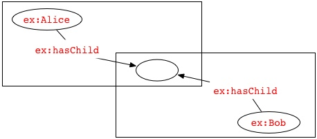

This document describes a precise semantics for the
RDF 1.2 Concepts and Abstract Syntax [RDF12-CONCEPTS]
and RDF 1.2 Schema [RDF12-SCHEMA].
It defines a number of distinct entailment regimes and corresponding patterns of entailment.
It is part of a suite of documents which comprise the full specification of RDF 1.2.
Status of This Document
This section describes the status of this
document at the time of its publication. A list of current W3C
publications and the latest revision of this technical report can be found
in the W3C technical reports index at
https://www.w3.org/TR/.
This document is part of RDF 1.2 document suite.
This is a revision of the 2014 Semantics specification for RDF
[RDF11-MT] and supersedes that document.
The technical content of the document is unchanged, only minor editorial changes have been made.
Publication as a First Public Working Draft does not
imply endorsement by W3C and its Members.
This is a draft document and may be updated, replaced or obsoleted by other
documents at any time. It is inappropriate to cite this document as other
than work in progress.
This document was produced by a group
operating under the
W3C Patent
Policy.
W3C maintains a
public list of any patent disclosures
made in connection with the deliverables of
the group; that page also includes
instructions for disclosing a patent. An individual who has actual
knowledge of a patent which the individual believes contains
Essential Claim(s)
must disclose the information in accordance with
section 6 of the W3C Patent Policy.
Notes in this style indicate changes from the 2004 RDF 1.0 semantics.
Notes in this style are technical asides on obscure or recondite matters.
1. Introduction
This document defines a model-theoretic semantics for RDF graphs
and the RDF and RDFS vocabularies, providing an exact formal specification
of when truth is preserved by transformations of RDF or operations which derive
RDF content from other RDF.
2. Conformance
As well as sections marked as non-normative, all authoring guidelines, diagrams, examples, and notes in this specification are non-normative. Everything else in this specification is normative.
The key words MAY, MUST, MUST NOT, SHOULD, and SHOULD NOT in this document
are to be interpreted as described in
BCP 14
[RFC2119] [RFC8174]
when, and only when, they appear in all capitals, as shown here.
This specification, RDF 1.2 Semantics,
is normative for RDF semantics and the validity of RDF inference processes.
It is not normative for many aspects of RDF meaning which are not described
or specified by this semantics,
including social issues of how IRIs are assigned meanings in use
and how the referents of IRIs are related to Web content expressed in other media
such as natural language texts.
3. Semantic Extensions and Entailment Regimes
RDF is intended for use as a base notation for a variety of extended notations
such as OWL [OWL2-OVERVIEW] and RIF [RIF-OVERVIEW],
whose expressions can be encoded as RDF graphs
which use a particular vocabulary with a specially defined meaning.
Also, particular IRI vocabularies may be given meanings by other specifications or conventions.
When such extra meanings are assumed,
a given RDF graph may support more extensive entailments than are sanctioned by the basic RDF semantics.
In general, the more assumptions that are made about the meanings of IRIs in an RDF graph,
the more entailments follow from those assumptions.
A particular such set of semantic assumptions is called a semantic extension.
Each semantic extension defines an entailment regime
(used here in the same sense as in the SPARQL 1.2 Entailment Regimes recommendation [SPARQL12-ENTAILMENT] )
of entailments which are valid under that extension.
RDFS, described later in this document, is one such semantic extension.
We will refer to entailment regimes by names such as RDFS entailment,
D-entailment, etc.
Semantic extensions MAY impose special syntactic conditions or restrictions upon RDF graphs,
such as requiring certain triples to be present,
or prohibiting particular combinations of IRIs in triples,
and MAY consider RDF graphs which do not conform to these conditions to be errors.
For example, RDF statements of the form
ex:a rdfs:subClassOf "Thing"^^xsd:string .
are prohibited in the OWL semantic extension based on description logics [OWL2-SYNTAX].
In such cases, basic RDF operations such as taking a subset of triples,
or combining RDF graphs, may cause syntax errors in parsers which recognize the extension conditions.
None of the semantic extensions normatively defined in this document
impose such syntactic restrictions on RDF graphs.
All entailment regimes MUST be monotonic extensions
of the simple entailment regime described in the document,
in the sense that if A simply entails B then A also entails B under any extended notion of entailment,
provided that any syntactic conditions of the extension are also satisfied.
Put another way, a semantic extension cannot "cancel" an entailment
made by a weaker entailment regime,
although it can treat the result as a syntax error.
An interpretation is a mapping from IRIs and literals into a set,
together with some constraints upon the set and the mapping.
This document defines various notions of interpretation,
each corresponding in a standard way to an entailment regime.
These are identified by prefixes such as simple interpretation, etc.,
and are defined in later sections.
The unqualified term interpretation is usually used to refer to
any compatible kind of interpretation in general,
but if clear from the context might refer to a specific kind of interpretation.
The word denotes
is used here for the relationship between an IRI or literal
and what it refers to in a given interpretation,
itself called the referent.
(The phrase refer to is often used instead of denote and
denotation instead of referent.)
IRI meanings may also be determined by other constraints external to the RDF semantics;
when we wish to refer to such an externally defined naming relationship,
we will use the word identify and its cognates.
For example, the fact that the IRI http://www.w3.org/2001/XMLSchema#decimal
is widely used as the name of a datatype described in the XML Schema document [XMLSCHEMA11-2]
might be described by saying that the IRI identifies that datatype.
If an IRI identifies something it may or may not denote it in a given interpretation,
depending on how the semantics is specified.
For example, an IRI used as a graph name identifying a named graph in an
RDF dataset may denote something different from the graph it identifies.
Throughout this document, the equality sign = indicates strict identity.
The statement "A = B" means that there is one entity which both expressions "A" and "B" denote.
Angle brackets < x, y > are used to indicate an ordered pair of x and y.
Throughout this document, RDF graphs and other fragments of RDF abstract syntax
are written using the notational conventions of the Turtle syntax [TURTLE].
The namespace prefixes rdf:rdfs: and xsd:
are used as in [RDF12-CONCEPTS],
RDF vocabularies.
When the exact IRI does not matter, the prefix ex: is used.
When stating general rules or conditions we use three-character variables such as
aaa, xxx, sss to indicate arbitrary IRIs, literals,
or other components of RDF syntax.
Some cases are illustrated by node-arc diagrams showing the graph structure directly.
A name is any IRI or literal. A literal contains
two names: itself and its internal type
IRI. A vocabulary is a set of names.
The empty graph is the empty set of triples.
A subgraph of an RDF graph is a subset of the triples in the graph.
A triple is identified with the singleton set containing it,
so that each triple in a graph is considered to be a subgraph.
A proper subgraph is a proper subset of the triples in the graph.
A ground RDF graph is one that contains no blank nodes.
Suppose that M is a functional mapping from a set of blank
nodes to some set of literals, blank nodes and IRIs. Any graph obtained
from a graph G by replacing some or all of the blank nodes N in G by M(N) is
an instance of G. Any graph is an instance of itself,
an instance of an instance of G is an instance of G,
and if H is an instance of G then every triple in H is an instance of at least one triple
in G.
An instance with respect to a vocabulary
V is an instance in which all the
names in the instance that were substituted
for blank nodes in the original are names
from V.
A proper instance of a graph
is an instance in which a blank node has been replaced by a name, or two blank
nodes in the graph have been mapped into the same node in the instance.
Two graphs are isomorphic when each maps into the other by a 1:1 mapping on blank nodes. Isomorphic graphs are mutual instances with an invertible instance
mapping. As blank nodes have no particular identity beyond their location in a graph, we will often treat isomorphic graphs as identical.
An RDF graph is lean if it has no instance which is
a proper subgraph of itself. Non-lean graphs have internal redundancy
and express the same content as their lean subgraphs. For example, the graph
Graphs share blank nodes only if they are derived from graphs
described by documents or other structures (such as an RDF dataset)
that explicitly provide for the sharing of blank nodes between different RDF graphs.
Simply downloading a web document does not mean that the blank nodes in a resulting RDF
graph are the same as the blank nodes coming from other downloads of
the same document or from the same RDF source.
RDF applications which manipulate concrete syntaxes for RDF which use blank node identifiers
should take care to keep track of the identity of the blank nodes they identify.
Blank node identifiers often have a local scope,
so when RDF from different sources is combined,
identifiers may have to be changed in order to avoid accidental conflation
of distinct blank nodes.
For example, two documents may both use the blank node identifier "_:x"
to identify a blank node, but unless these documents are in a shared identifier scope
or are derived from a common source,
the occurrences of "_:x" in one document
will identify a different blank node than the one in the graph described by the other document.
When graphs are formed by combining RDF from multiple sources,
it may be necessary to standardize apart the blank node identifiers
by replacing them by others which do not occur in the other document(s).
For example, the two graphs represented by the following texts:
ex:a ex:p _:x .

ex:b ex:q _:x .

contain four nodes. Their union would therefore also contain four nodes:

However, the document formed by simply concatenating these textual surface representations:
ex:a ex:p _:x .
ex:b ex:q _:x .
describes a graph containing three nodes:

since the two occurrences of the blank node identifier "_:x" occurring in a common identifier scope identify the same blank node. The four-node union of these two graphs is more properly described by a surface form such as:
ex:a ex:p _:x1 .
ex:b ex:q _:x2 .
in which the blank node identifiers have been standardized
apart to avoid conflating the distinct blank nodes.
(The particular blank node identifiers used have no significance, only that they are distinct.)
It is possible for two or more graphs to share a blank node,
for example if they are subgraphs of a single larger graph or derived from a common source.
In this case, the union of a set of graphs preserves the identity of blank nodes shared between the graphs.
In general, the union of a set of RDF graphs accurately represents the same semantic content
as the graphs themselves, whether or not they share blank nodes.
A related operation, called merging,
takes the union after forcing any shared blank nodes,
which occur in more than one graph, to be distinct in each graph.
The resulting graph is called the merge.
The merge of subgraphs of a graph may be larger than the original graph.
For example, the result of merging the two singleton subgraphs of the three-node graph
is the four-node graph
The union is always an instance of the merge. If graphs have no blank nodes in common, then their merge and union are identical.
5. Simple Interpretations
This section defines the basic notions of simple interpretation and truth for RDF graphs.
All semantic extensions of any vocabulary or higher-level notation encoded in RDF
MUST conform to these minimal truth conditions.
Other semantic extensions may extend and add to these,
but they MUST NOT modify or negate them.
For example, because simple interpretations are mappings which apply to IRIs,
a semantic extension cannot interpret different occurrences of a single IRI differently.
The entire semantics applies to RDF graphs, not to RDF sources.
An RDF source has a semantic meaning only through the graph that is its value at a given time,
or in a given state.
Graphs cannot change their semantics with time.
A simple interpretation I is a structure consisting of:
Definition of a simple interpretation.
1. A non-empty set IR of resources, called the domain or universe
of I.
2. A set IP, called the set of properties of I.
3. A mapping IEXT from IP into the powerset of IR x IR i.e. the
set of sets of pairs < x, y > with x and y in IR .
4. A mapping IS from IRIs into (IR union IP)
5. A partial mapping IL from literals into IR
The 2004 RDF 1.0 semantics defined simple interpretations relative to a vocabulary.
In the 2004 RDF 1.0 semantics, IL was a total, rather than partial, mapping.
The 2004 RDF 1.0 specification divided literals into 'plain' literals
with no type and optional language tags, and typed literals.
Usage has shown that it is important that every literal have a type.
RDF 1.1 replaces plain literals without language tags by literals typed with
the XML Schema string datatype,
and introduces the special type rdf:langString
for language-tagged strings.
The full semantics for typed literals is given in the next section.
Simple interpretations are required to interpret all names,
and are therefore infinite.
This simplifies the exposition.
However, RDF can be interpreted using finite structures,
supporting decidable algorithms.
Details are given in B. Finite interpretations.
IEXT(x), called the extension of x,
is a set of pairs which identify the arguments for which the property is true,
that is, a binary relational extension.
The distinction between IR and IL will become significant below when the semantics of datatypes are defined.
IL is allowed to be partial because some literals may fail to have a referent.
It is conventional to map a relation name to a relational extension directly.
This however presumes that the vocabulary is segregated into relation names and individual names,
and RDF makes no such assumption.
Moreover, RDF allows an IRI to be used as a relation name applied to itself as an argument.
Such self-application structures are used in RDFS, for example.
The use of the IEXT mapping to distinguish the relation as an object from its relational extension
accommodates both of these requirements.
It also provides for a notion of RDFS 'class' which can be distinguished
from its set-theoretic extension.
A similar technique is used in the ISO/IEC Common Logic standard [ISO24707].
The referent of a ground RDF graph in a simple interpretation I is then given by the following rules,
where the interpretation is also treated as a function from expressions (names, triples and graphs) to elements of the universe and truth values:
Semantic conditions for ground graphs.
if E is a literal then I(E) = IL(E)
if E is an IRI then I(E) = IS(E)
if E is a ground triple s p o.
then I(E) = true if
I(p) is in IP and the pair <I(s),I(o)>
is in IEXT(I(p))
otherwise I(E) = false.
if E is a ground RDF graph then I(E) = false if I(E') =
false for some triple E' in E, otherwise I(E) =true.
If IL(E) is undefined for some literal E then E has no semantic value,
so any triple containing it will be false,
so any graph containing that triple will also be false.
The final condition implies that the empty graph (the empty set of triples) is always true.
The sets IP and IR may overlap, indeed IP can be a subset of IR.
Because of the domain conditions on IEXT,
the referent of the subject and object of any true triple will be in IR;
so any IRI which occurs in a graph both as a predicate and as a subject or object
will denote something in the intersection of IP and IR.
Semantic extensions may impose further constraints upon interpretation mappings
by requiring some IRIs to denote in particular ways.
For example, D-interpretations, described below, require some IRIs,
understood as identifying and referring to datatypes, to have a fixed referent.
5.1 Blank nodes
Blank nodes are treated as simply indicating the existence of a thing,
without using an IRI to identify any particular thing.
This is not the same as assuming that the blank node indicates an 'unknown' IRI.
Suppose I is a simple interpretation and A is a mapping from a set of blank nodes
to the universe IR of I.
Define the mapping [I+A] to be I on names,
and A on blank nodes on the set: [I+A](x)=I(x) when x is a name
and [I+A](x)=A(x) when x is a blank node;
and extend this mapping to triples and RDF graphs using the rules given above for ground graphs.
Then the semantic conditions for an RDF graph are:
Semantic condition for blank nodes.
If E is an RDF graph then I(E) = true if [I+A](E) =
true for some mapping A from the set of blank nodes in E to IR, otherwise
I(E)= false.
Mappings from blank nodes to referents are not part of the definition of a simple interpretation,
since the truth condition refers only to some such mapping.
Blank nodes themselves differ from other nodes in not being assigned
a referent by a simple interpretation, reflecting the intuition that
they have no 'global' meaning.
5.1.1 Shared blank nodes (Informative)
This section is non-normative.
The semantics for blank nodes are stated in terms of the truth of a graph. However, when two (or more) graphs share a blank node, their meaning is not fully captured by treating them in isolation. For example, consider the overlapping graphs

and a simple interpretation I over the universe {Alice, Bob, Monica, Ruth} with:
I(ex:Alice)=Alice, I(ex:Bob)=Bob, IEXT(I(ex:hasChild))={<Alice,Monica>,<Bob,Ruth> }
Each of the inner graphs is true under this interpretation,
but the two of them together is not,
because the three-node graph says that Alice and Bob have a child together.
In order to capture the full meaning of graphs sharing a blank node,
it is necessary to consider the union graph containing all the triples
which contain the blank node.
RDF graphs can be viewed as conjunctions of simple atomic sentences in first-order logic,
where blank nodes are free variables which are understood to be existential.
Taking the union of two graphs is then analogous to syntactic conjunction in this syntax.
RDF syntax has no explicit variable-binding quantifiers, so the truth conditions for any RDF graph
treat the free variables in that graph as existentially quantified in that graph.
Taking the union of graphs which share a blank node changes the implied quantifier scopes.
5.2 Simple Entailment
Following standard terminology, we say that I (simply) satisfies
E when I(E)=true, that E is (simply) satisfiable
when a simple interpretation exists which satisfies it,
otherwise (simply) unsatisfiable,
and that a graph G simply entails
a graph E when every interpretation which satisfies G also satisfies E.
If two graphs E and F each entail the other then they are logically equivalent.
If there are no (simple) interpretations that satisfy a graph then that graph is
inconsistent.
In later sections these notions will be adapted to other classes of interpretations,
but throughout this section 'entailment' should be interpreted as meaning simple entailment.
We do not define a notion of entailment between sets of graphs.
To determine whether a set of graphs entails a graph,
the graphs in the set must first be combined into one graph,
either by taking the union or the merge of the graphs.
Unions preserve the common meaning of shared blank nodes,
while merging effectively ignores any sharing of blank nodes.
Merging the set of graphs produces the same definition of entailment by a set
that was defined in the 2004 RDF 1.0 specification.
Any process which constructs a graph E from
some other graph S is (simply) valid if S
simply entails E in every case,
otherwise invalid.
The fact that an inference is valid should not be understood as meaning
that any RDF application is obliged or required to make the inference.
Similarly, the logical invalidity of some RDF transformation or process
does not mean that the process is incorrect or prohibited.
Nothing in this specification requires or prohibits any particular operations on RDF graphs or sources.
Entailment and validity are concerned solely with establishing the conditions
on such operations which guarantee the preservation of truth.
While logically invalid processes, which do not follow valid entailments,
are not prohibited, users should be aware that they may be at risk of
introducing falsehoods into true RDF data.
Nevertheless, particular uses of logically invalid processes may be justified
and appropriate for data processing under circumstances where truth can be
ensured by other means.
Entailment refers only to the truth of RDF graphs,
not to their suitability for any other purpose.
It is possible for an RDF graph to be fitted for a given purpose and yet validly entail
another graph which is not appropriate for the same purpose.
An example is the RDF test cases manifest [RDF-TESTCASES] which is provided as an
RDF document for user convenience.
This document lists examples of correct entailments by describing their
antecedents and conclusions.
Considered as an RDF graph, the manifest simply entails a subgraph
which omits the antecedents,
and would therefore be incorrect if used as a test case manifest.
This is not a violation of the RDF semantic rules, but it shows that the property of
"being a correct RDF test case manifest"
is not preserved under RDF entailment,
and therefore cannot be described as an RDF semantic extension.
Such entailment-risky uses of RDF should be restricted to cases,
as here, where it is obvious to all parties what the intended special restrictions on entailment are,
in contrast with the more normal case of using RDF for the open publication of data on the Web.
5.3 Properties of simple entailment (Informative)
This section is non-normative.
The properties described here apply only to simple entailment,
not to extended notions of entailment introduced in later sections.
Proofs are given in C. Proofs of some results (Informative).
completely characterizes simple entailment in syntactic
terms. To detect whether one RDF graph simply entails another, check that
there is some instance of the entailed graph which is a subset of the first graph.
This is clearly decidable, but it is also difficult to determine in general,
since one can encode the NP-hard subgraph problem (detecting whether
one mathematical graph is a subgraph of another) as detecting simple entailment between RDF graphs.
This construction (due to Jeremy Carroll) uses graphs all of whose nodes are blank nodes.
The complexity of checking simple entailment is reduced by having fewer blank nodes in the conclusion E.
When E is a ground graph, it is simply a matter of checking the subset relationship on sets of triples.
Interpolation has a number of direct consequences, for example:
The empty graph is simply entailed by
any graph, and does not simply entail any graph except itself.
If S entails a finite graph E, then some finite subset S' of S entails E.
The property just above is called compactness - RDF is compact.
As RDF graphs can be infinite, this is sometimes important.
If E contains an IRI which does not occur anywhere in S,
then S does not simply entail E.
6. Skolemization (Informative)
This section is non-normative.
Skolemization is a transformation on RDF graphs
which eliminates blank nodes by replacing them with "new" IRIs,
which means IRIs which are coined for this purpose and are therefore guaranteed
to not occur in any other RDF graph (at the time of creation).
See Section 3.5 of [RDF12-CONCEPTS]
for a fuller discussion.
Suppose G is a graph containing blank nodes and sk is a skolemization mapping
from the blank nodes in G to the skolem IRIs which are substituted for them,
so that sk(G) is a skolemization of G.
Then the semantic relationship between them can be summarized as follows.
sk(G) simply entails G (since sk(G) is an instance of G.)
G does not simply entail sk(G) (since sk(G) contains IRIs not in G.)
For any graph H, if sk(G) simply entails H then there is a graph H' such that G entails H' and H=sk(H') .
For any graph H which does not contain any of the "new" IRIs introduced into sk(G),
sk(G) simply entails H if and only if G simply entails H.
The second property means that a graph is not logically equivalent to its skolemization.
Nevertheless, they are in a strong sense almost interchangeable, as shown the next two properties. The third property means that even when conclusions are drawn from the skolemized graph which do contain the new vocabulary, these will exactly mirror what could have been derived from the original graph with the original blank nodes in place. The replacement of blank nodes by IRIs does not effectively alter what can be validly derived from the graph, other than by giving new names to what were formerly anonymous entities. The fourth property, which is a consequence of the third, clearly shows that in some sense a skolemization of G can "stand in for" G as far as entailments are concerned. Using sk(G) instead of G will not affect any entailments which do not involve the new skolem vocabulary.
7. Literals and datatypes
In the 2004 RDF 1.0 specification,
datatype D-entailment was defined as a semantic extension of RDFS-entailment.
Here it is defined as a direct extension to basic RDF.
This is more in conformity with actual usage,
where RDF with datatypes is widely used without the RDFS vocabulary.
If there is a need to distinguish this from the 2004 RDF 1.0 terminology,
the longer phrasing "simple D-entailment" or "simple datatype entailment"
should be used rather than "D-entailment".
Datatypes are identified by IRIs.
Interpretations will vary according to which IRIs are recognized as denoting datatypes.
We describe this using a parameter D on simple interpretations,
where D is the set of recognized datatype IRIs.
The previous version of this specification defined the parameter D
as a datatype map from IRIs to datatypes,
i.e. as a restricted kind of interpretation mapping.
As the current semantics presumes that a recognized IRI identifies a unique datatype,
this IRI-to-datatype mapping is globally unique and externally specified,
so we can think of D as either a set of IRIs or as a fixed datatype map.
Formally, the datatype map corresponding to the set D is the
restriction of a D-interpretation to the set D.
Semantic extensions which are stated in terms of conditions on datatype maps
can be interpreted as applying to this mapping.
The exact mechanism by which an IRI identifies a datatype is considered to be
external to the semantics, but the semantics presumes that a recognized IRI identifies
a unique datatype wherever it occurs.
RDF processors which are not able to determine which datatype is identified by an IRI
cannot recognize that IRI,
and should treat any literals with that IRI as their datatype IRI as unknown names.
RDF literals and datatypes are fully described in
Section 5 of [RDF12-CONCEPTS].
In summary: with one exception, RDF literals combine a string and an IRI identifing a datatype.
The exception is language-tagged strings,
which have two syntactic components, a string and a language tag,
and are assigned the type rdf:langString.
A datatype is understood to define a partial mapping,
called the
lexical-to-value mapping,
from a lexical space (a set of character strings) to values.
The function L2V maps datatypes to their lexical-to-value mapping.
A literal with datatype d denotes the value obtained by applying this mapping
to the character string sss: L2V(d)(sss).
If the literal string is not in the lexical space,
so that the lexical-to-value mapping gives no value for the literal string,
then the literal has no referent.
The value space of a datatype is the range of the lexical-to-value mapping.
Every literal with that type either denotes a value in the value space of the type,
or fails to denote at all.
An ill-typed literal is one whose datatype IRI is recognized,
but whose character string is assigned no value by the lexical-to-value mapping
for that datatype.
RDF processors are not required to recognize any datatype IRIs other than
rdf:langString
and xsd:string,
but when IRIs listed in
Section 5 of [RDF12-CONCEPTS]
are recognized, they MUST be interpreted as described there, and when the IRI rdf:PlainLiteral is recognized, it MUST be interpreted to denote the datatype defined in [RDF-PLAIN-LITERAL]. RDF processors MAY recognize other datatype IRIs, but when other datatype IRIs are recognized, the mapping between the datatype IRI and the datatype it denotesMUST be specified unambiguously, and MUST be fixed during all RDF transformations or manipulations. In practice, this can be achieved by the IRI linking to an external specification of the datatype which describes both the components of the datatype itself and the fact that the IRI identifies the datatype, thereby fixing a value of the datatype map of this IRI.
Literals with rdf:langString
as their datatype are an exceptional case which are given a special treatment.
The IRI rdf:langString is classified as a datatype IRI,
and interpreted to denote a datatype, even though no L2V mapping is defined for it.
The value space of rdf:langString is the set of all pairs of a string with a language tag.
The semantics of literals with this as their type are given below.
RDF allows any IRI to be used in a literal,
even when it is not recognized as referring to a datatype.
Literals with such an "unknown" datatype IRI,
which is not in the set of recognized datatypes,
SHOULD NOT be treated as errors, although RDF applications MAY issue a warning.
Such literals SHOULD be treated like IRIs and assumed to denote some thing in the universe IR.
RDF processors which do not recognize a datatype IRI will not be able
to detect some entailments which are visible to one which does.
For example, the fact that
ex:a ex:p "20.0000"^^xsd:decimal .
entails
ex:a ex:p "20.0"^^xsd:decimal .
will not be visible to a processor which does not recognize the datatype IRI xsd:decimal.
7.1 D-interpretations
Let D be a set of IRIs identifying datatypes.
A (simple) D-interpretation is a simple interpretation
which satisfies the following conditions:
Semantic conditions for literals.
If rdf:langString is in D,
then for every language-tagged string E with lexical form sss and language tag ttt,
IL(E)= < sss, ttt' >, where ttt' is ttt converted to lower case using US-ASCII rules
For every other IRI aaa in D,
I(aaa) is the datatype identified by aaa, and for every literal
"sss"^^aaa, IL("sss"^^aaa) = L2V(I(aaa))(sss)
If the literal is ill-typed then the L2V(I(aaa)) mapping has no value,
and so the literal cannot denote anything.
In this case, any triple containing the literal must be false.
Thus, any triple, and hence any graph, containing an ill-typed literal will be
D-unsatisfiable, i.e. false in every D-interpretation.
This applies only to literals typed with recognized datatype IRIs in D;
literals with an unrecognized type IRI are not ill-typed and cannot give rise to
a D-unsatisfiable graph.
The special datatype rdf:langString
has no ill-typed literals.
Any syntactically legal literal with this type will denote a value in every
D-interpretation where D includes rdf:langString.
The only ill-typed literals of type xsd:string
are those containing a Unicode code point which does not match
the Char production in [XML11].
Such strings cannot be written in an XML-compatible surface syntax.
In the 2004 RDF 1.0 specification,
ill-typed literals were required to denote a value in IR,
and D-unsatisfiability could be recognized only by using the RDFS semantics.
7.2 Datatype entailment
A graph is (simply) D-satisfiable or
satisfiable recognizing D when it has the value true
in some D-interpretation, and a graph S (simply) D-entails or
entails recognizing D a graph G when every D-interpretation which
satisfies S also D-satisfies G.
Unlike the case with simple interpretations,
it is possible for a graph to have no satisfying D-interpretations
i.e. to be D-unsatisfiable.
RDF processors MAY treat an unsatisfiable graph as signaling an error condition,
but this is not required.
The fact that an unsatisfiable statement entails any other statement
has been known since antiquity.
It is called the principle of ex falso quodlibet.
It should not be interpreted to mean that it is necessary,
or even permissible, to actually draw any conclusion from an unsatisfiable graph.
In all of this language, 'D' is being used as a parameter to represent some set of datatype IRIs,
and different D sets will yield different notions of satisfiability and entailment.
The more datatypes are recognized, the stronger is the entailment,
so that if D ⊂ E and S E-entails G then S must D-entail G.
Simple entailment is { }-entailment, i.e. D-entailment when D is the empty set,
so if S D-entails G then S simply entails G.
7.2.1 Patterns of datatype entailment (Informative)
This section is non-normative.
Unlike simple entailment, it is not possible to give a single syntactic criterion
to detect all D-entailments,
which can hold because of particular properties of the lexical-to-value mappings
of the recognized datatypes.
For example, if D contains xsd:decimal then
ex:a ex:p "25.0"^^xsd:decimal .
D-entails
ex:a ex:p "25"^^xsd:decimal .
In general, any triple containing a literal with a recognized
datatype IRI D-entails another literal when the lexical strings of
the literals map to the same value under the lexical-to-value map of the datatype.
If two different datatypes in D map lexical strings to a common value,
then a triple containing a literal typed with one datatype may D-entail
another triple containing a literal typed with a different datatype.
For example, "25"^^xsd:integer and "25.0"^^xsd:decimal
have the same value, so the above also D-entails
Ill-typed literals are the only way in which a graph can be simply D-unsatisfiable,
but datatypes can give rise to a variety of other unsatisfiable graphs
when combined with the RDFS vocabulary, defined later.
8. RDF Interpretations
RDF interpretations impose extra semantic conditions on xsd:string
and part of the infinite set of IRIs with the namespace prefix rdf: .
S RDF entails E recognizing D
when every RDF interpretation recognizing D which satisfies
S also satisfies E. When D is {rdf:langString, xsd:string}
then we simply say S RDF entails E.
E is RDF unsatisfiable (recognizing D)
when it has no satisfying RDF interpretation (recognizing D).
In addition, the semantic conditions on value spaces may produce other unsatisfiable graphs.
For example, when D contains xsd:integer and xsd:boolean,
then the following is RDF unsatisfiable recognizing D:
(rdfs:comment, rdfs:seeAlso, rdfs:isDefinedBy
and rdfs:label are included here because some constraints which
apply to their use can be stated using rdfs:domain, rdfs:range
and rdfs:subPropertyOf. Other than this, the formal semantics does
not constrain their meanings.)
It is convenient to state the RDFS semantics
in terms of a new semantic construct, a class, i.e. a resource which represents
a set of things in the universe which all have that class as a value of their
rdf:type property. Classes are defined to be things of type rdfs:Class,
and the set of all classes in an interpretation will be called IC.
The semantic conditions are stated in terms of a mapping ICEXT (for the Class
Extension in I) from IC to the set of subsets of IR.
A class may have an
empty class extension. Two different classes can have the same class extension.
The class extension of rdfs:Class contains the class rdfs:Class.
An RDFS interpretation (recognizing D) is an RDF interpretation (recognizing D) I
which satisfies the semantic conditions in the following table, and all the triples in the subsequent table of RDFS axiomatic triples.
RDFS semantic conditions.
ICEXT(y) is defined to be { x : < x,y > is in IEXT(I(rdf:type)) }
IC is defined to be ICEXT(I(rdfs:Class))
LV is defined to be ICEXT(I(rdfs:Literal))
ICEXT(I(rdfs:Resource)) = IR
ICEXT(I(rdf:langString)) is the set {I(E) : E a language-tagged string }
for every other IRI aaa in D, ICEXT(I(aaa)) is the value space of I(aaa)
for every IRI aaa in D, I(aaa) is in ICEXT(I(rdfs:Datatype))
If
< x,y > is in IEXT(I(rdfs:domain)) and < u,v > is
in IEXT(x) then u is in ICEXT(y)
If
< x,y > is in IEXT(I(rdfs:range)) and < u,v > is
in IEXT(x) then v is in ICEXT(y)
IEXT(I(rdfs:subPropertyOf))
is transitive and reflexive on IP
If
<x,y> is in IEXT(I(rdfs:subPropertyOf)) then x and
y are in IP and IEXT(x) is a subset of IEXT(y)
If
x is in IC then < x, I(rdfs:Resource) > is in IEXT(I(rdfs:subClassOf))
IEXT(I(rdfs:subClassOf))
is transitive and reflexive on IC
If
< x,y > is in IEXT(I(rdfs:subClassOf)) then x and y are
in IC and ICEXT(x) is a subset of ICEXT(y)
If
x is in ICEXT(I(rdfs:ContainerMembershipProperty)) then:
< x, I(rdfs:member) > is in IEXT(I(rdfs:subPropertyOf))
If
x is in ICEXT(I(rdfs:Datatype)) then < x,
I(rdfs:Literal) > is in IEXT(I(rdfs:subClassOf))
In the 2004 RDF 1.0 semantics, LV was defined as part of a simple interpretation structure,
and the definition given here was a constraint.
Since I is an RDF interpretation, the first condition implies that IP
= ICEXT(I(rdf:Property)).
The semantic conditions on RDF interpretations,
together with the RDFS conditions on ICEXT, mean that every recognized datatype
can be treated as a class whose extension is the value space of the datatype,
and every literal with that datatype either fails to denote, or denotes a value in that class.
When using RDFS semantics, the referents of all recognized datatype IRIs can be considered
to be in the classrdfs:Datatype.
The axioms and conditions listed above have some redundancy. For example, all but one
of the RDF axiomatic triples can be derived from the RDFS axiomatic triples
and the semantic conditions on ICEXT, rdfs:domain and rdfs:range.
Other triples which must be true in all RDFS interpretations
include the following. This is not a complete set.
RDFS does not partition the universe into disjoint categories of classes, properties and individuals.
Anything in the universe can be used as a class or as a property, or both,
while retaining its status as an individual which may be in classes and have properties.
Thus, RDFS permits classes which contain other classes, classes of properties, properties of classes, etc.
As the axiomatic triples above illustrate, it also permits classes which contain themselves and properties
which apply to themselves.
A property of a class is not necessarily a property of its members, nor vice versa.
9.1 A note on rdfs:Literal (Informative)
This section is non-normative.
The class rdfs:Literal is not the class of literals,
but rather that of literal values, which may also be denoted by IRIs.
For example, LV does not contain the literal "foodle"^^xsd:string
but it does contain the string "foodle".
A triple of the form
ex:a rdf:type rdfs:Literal .
is consistent even though its subject is an IRI rather
than a literal. It says that the IRI 'ex:a'
denotes a literal value, which is quite possible since literal values are things in the universe.
Blank nodes may range over literal values, for the same reason.
Since every RDFS interpretation is an RDF interpretation,
if S RDFS entails E then S also RDF entails E;
but RDFS entailment is stronger than RDF entailment.
Even the empty graph has a large number of RDFS entailments which are not RDF entailments,
for example all triples of the form
aaa rdf:type rdfs:Resource .
where aaa is an IRI, are true in all RDFS interpretations.
9.2.1 Patterns of RDFS entailment (Informative)
This section is non-normative.
RDFS entailment holds for all the following patterns,
which correspond closely to the RDFS semantic conditions:
RDFS provides for several new ways to be unsatisfiable recognizing D.
For example, the following graph is RDFS unsatisfiable recognizing {xsd:integer, xsd:boolean}:
RDF datasets,
defined in RDF Concepts [RDF12-CONCEPTS],
package up zero or more named RDF graphs along with a single unnamed, default RDF graph.
The graphs in a single dataset may share blank nodes.
The association of graph name IRIs with graphs is used by SPARQL [SPARQL12-QUERY]
to allow queries to be directed against particular graphs.
Graph names in a dataset may denote something other than the graph they are paired with.
This allows IRIs denoting other kinds of entities, such as persons,
to be used in a dataset to identify graphs of information relevant to the entity denoted by the graph name IRI.
When a graph name is used inside RDF triples in a dataset it may or may not denote the graph it names.
The semantics does not require, nor should RDF engines presume,
without some external reason to do so, that graph names used in RDF triples denote to the graph they name.
RDF datasets MAY be used to express RDF content.
When used in this way, a dataset SHOULD be understood to have at least the same content as its default graph.
Note however that replacing the default graph of a dataset by a logically equivalent graph
will not in general produce a structurally similar dataset,
since it may for example disrupt co-occurrences of blank nodes between the default graph and other graphs in the dataset,
which may be important for reasons other than the semantics of the graphs in the dataset.
Other semantic extensions and entailment regimes MAY place further semantic conditions and restrictions on RDF datasets,
just as with RDF graphs.
One such extension, for example, could set up a modal-like interpretation structure so that entailment
between datasets would require RDF graph entailments between the graphs with the same name
(adding in empty graphs as required).
11. Appendices
A. Entailment rules (Informative)
This section is non-normative.
(This section is based on work described more fully in [HORST04], [HORST05],
which should be consulted for technical details and proofs.)
The RDF and RDFS entailment patterns listed in the above tables can be viewed
as left-to-right rules which add the entailed conclusion to a graph.
These rule sets can be used to check RDF (or RDFS) entailment between graphs S and E,
by the following sequence of operations:
Add to S all the RDF (or RDF and RDFS) axiomatic triples except those containing the container membership property IRIs rdf:_1, rdf:_2, ...
For every container membership property IRI which occurs in E, add the RDF (or RDF and RDFS) axiomatic triples which contain that IRI.
Apply the RDF (or RDF and RDFS) inference patterns as rules, adding each conclusion to the graph, to exhaustion; that is, until they generate no new triples.
Determine if E has an instance which is a subset of the set, i.e. whether the enlarged set simply entails E.
This process is clearly correct, in that if it gives a positive result then indeed S does RDF (RDFS) entail E.
It is not, however, complete: there are cases of S entailing E which are not detectable by this process. Examples include:
Both of these can be handled by allowing the rules to apply to a generalization of the RDF syntax
in which literals may occur in subject position and blank nodes may occur in predicate position.
Consider generalized RDF triples, graphs, and datasets
instead of RDF triples, graphs and datasets (extending the generalization used in [HORST04]
and following exactly the terms used in [OWL2-PROFILES]).
The semantics described in this document applies to the generalization without change,
so that the notions of interpretation, satisfiability and entailment can be used freely.
Then we can replace the first RDF entailment pattern with the simpler and more direct
Where the entailment patterns have been applied to generalized RDF syntax but yield a final conclusion which is legal RDF.
With the generalized syntax, these rules are complete for both RDF and RDFS entailment. Stated exactly:
Let S and E be RDF graphs. Define the generalized RDF (RDFS) closure of S towards E
to be the set obtained by the following procedure.
Add to S all the RDF (and RDFS) axiomatic triples which do not contain any container membership property IRI.
For each container membership property IRI which occurs in E, add the RDF (and RDFS) axiomatic triples which contain that IRI.
If no triples were added in step 2., add the RDF (and RDFS) axiomatic triples which contain rdf:_1.
Apply the rules GrdfD1 and rdfD2 (and the rules rdfs1 through rdfs13),
with D={rdf:langString, xsd:string}, to the set in all possible ways, to exhaustion.
The closures are finite. The generation process is decidable and of polynomial complexity.
Detecting simple entailment is NP-complete in general, but of low polynomial order when E contains no blank nodes.
Every RDF(S) closure, even starting with the empty graph,
will contain all RDF(S) tautologies which can be expressed using the vocabulary of the original graph
plus the RDF and RDFS vocabularies.
In practice there is little utility in re-deriving these,
and a subset of the rules can be used to establish most entailments of practical interest.
If it is important to stay within legal RDF syntax, rule rdfD1 may be used instead of GrdfD1,
and the introduced blank node can be used as a substitute for the literal in subsequent derivations.
The resulting set of rules will not however be complete.
As noted earlier, detecting datatype entailment for larger sets of datatype IRIs
requires attention to idiosyncratic properties of the particular datatypes.
B. Finite interpretations
This section is non-normative.
To keep the exposition simple, the RDF semantics has been phrased in a way which requires interpretations
to be larger than absolutely necessary.
For example, all interpretations are required to interpret the whole IRI vocabulary,
and the universes of all D-interpretations where D contains
xsd:string must contain all possible strings and therefore be infinite.
This appendix sketches, without proof, how to re-state the semantics using smaller semantic structures
without changing any entailments.
Basically, it is only necessary for an interpretation structure to interpret the names
actually used in the graphs whose entailment is being considered, and to consider interpretations
whose universes are at most as big as the number of names and blank nodes in the graphs.
More formally, we can define a pre-interpretation over a vocabulary V to be a structure I
similar to a simple interpretation but with a mapping only from V to its universe IR.
Then when determining whether G entails E, consider only pre-interpretations over the finite vocabulary
of names actually used in G union E. The universe of such a pre-interpretation can be restricted to the cardinality N+B+1, where N is the size of the vocabulary and B is the number of blank nodes in the graphs. Any such pre-interpretation may be extended to simple interpretations, all of which will give the same truth values for any triples in G or E. Satisfiability, entailment and so on can then be defined with respect to these finite pre-interpretations, and shown to be identical to the ideas defined in the body of the specification.
When considering D-entailment, pre-interpretations may be kept finite
by weakening the semantic conditions for literals so that IR needs to contain literal values
only for literals which actually occur in G or E, and the size of the universe restricted to (N+B)×(D+1),
where D is the number of recognized datatypes.
(A tighter bound is possible.) For RDF entailment,
only the finite part of the RDF vocabulary which includes those container membership properties
which actually occur in the graphs need to be interpreted,
and the second RDF semantic condition is weakened to apply only to values
which are values of literals which actually occur in the vocabulary.
For RDFS interpretations, again only that finite part of the infinite container membership property vocabulary
which actually occurs in the graphs under consideration needs to be interpreted.
In all these cases, a pre-interpretation of the vocabulary of a graph may be extended to a full interpretation
of the appropriate type without changing the truth-values of any triples in the graphs.
The whole semantics could be stated in terms of pre-interpretations,
yielding the same entailments, and allowing finite RDF graphs to be interpreted in finite structures,
if the finite model property is considered important.
C. Proofs of some results (Informative)
This section is non-normative.
The empty graph is simply entailed by
any graph, and does not simply entail any graph except itself.
The empty graph is true in all simple interpretations, so is entailed by any graph.
If G contains a triple <a b c>, then any simple interpretation I with IEXT(I(b))={ } makes G false;
so the empty graph does not entail G. QED.
If I satisfies G then it satisfies every triple in G, hence every triple in any subset of G. QED.
A graph
is simply entailed by any of its instances.
Suppose H is an instance of G with the instantiation mapping M, and that I satisfies H.
For blank nodes n in G which are not in H define A(n)=I(M(n)); then I+A satisfies G, so I satisfies G. QED.
Consider the simple interpretation with universe {x}, IEXT(x)= <x,x > and I(aaa)=x for any IRI aaa. This interpretation satisfies every RDF graph. QED.
If a subgraph E' of G is an instance of E then G entails E' which entails E,
so G entails E. Now suppose G entails E, and consider the
Herbrand interpretation I of G defined as follows.
IR contains the names and blank nodes which occur in the graph, with I(n)=n
for each name n; n is in IP and <a, b> in IEXT(n) just when the triple <a n b> is in the graph.
(For IRIs which do not occur in the graph, assign them values in IR at random.)
I satisfies every triple <s p o> in E; that is,
for some mapping A from the blank nodes of E to the vocabulary of G,
the triple <[I+A](s) I(p) [I+A](o)> occurs in G. But this is an instance of <s p o>
under the instance mapping A; so an instance of E is a subgraph of G. QED.
if E is lean and E' is a proper instance of E, then E does not simply entail E'.
Suppose E entails E', then a subgraph of E is an instance of E', which is a proper instance of E;
so a subgraph of E is a proper instance of E, so E is not lean. QED.
If E contains an IRI which does not occur in S, then S does not simply entail E.
IF S entails E then a subgraph of S is an instance of E,
so every IRI in E must occur in that subgraph,
so must occur in S. QED.
For any graph H, if sk(G) simply entails H then there is a graph H'
such that G entails H' and H=sk(H').
The skolemization mapping sk substitutes a unique new IRI for each blank node,
so it is 1:1, so has an inverse. Define ks to be the inverse mapping
which replaces each skolem IRI by the blank node it replaced.
Since sk(G) entails H, a subgraph of sk(G) is an instance of H,
say A(H) for some instance mapping A on the blank nodes in H.
Then ks(A(H)) is a subgraph of G; and ks(A(H))=A(ks(H)) since
the domains of A and ks are disjoint.
So ks(H) has an instance which is a subgraph of G,
so is entailed by G; and H=sk(ks(H)). QED.
For any graph H which does not contain any of the "new" IRIs introduced into sk(G),
sk(G) simply entails H if and only if G simply entails H.
Using the terminology in the previous proof: if H does not contain any skolem IRIs, then H=ks(H).
So if sk(G) entails H then G entails ks(H)=H; and if G entails H then sk(G) entails G entails H, so sk(G) entails H. QED.
D. RDF reification, containers and collections (Informative)
This section is non-normative.
The RDF semantic conditions do not place formal constraints on the meaning
of much of the RDF vocabulary which is intended for use in describing containers and bounded collections,
or the reification vocabulary intended to enable an RDF graph to describe RDF triples.
This appendix briefly reviews the intended meanings of this vocabulary.
The omission of these conditions from the formal semantics is a design decision
to accommodate variations in existing RDF usage and to make it easier to implement
processes to check formal RDF entailment. For example, implementations may decide
to use special procedural techniques to implement the RDF collection vocabulary.
The intended meaning of this vocabulary is to allow an RDF graph to act as metadata describing other RDF triples.
Consider an example graph containing a single triple:
ex:a ex:b ex:c .
and suppose that IRI ex:graph1 is used to identify this graph.
Exactly how this identification is achieved is external to the RDF model,
but it might be by the IRI resolving to a concrete syntax document describing the graph,
or by the IRI being the associated name of a named graph in a dataset.
Assuming that the IRI can be used to denote the triple,
then the reification vocabulary allows us to describe the first graph in another graph:
The second graph is called a reification of the triple in the first graph.
Reification is not a form of quotation. Rather, the reification describes the
relationship between a token of a triple and the resources that the triple denotes.
The value of the rdf:subject property is not the
subject IRI itself but the thing it denotes, and similarly for rdf:predicate and rdf:object.
For example, if the referent of ex:a is Mount Everest,
then the subject of the reified triple is also the mountain, not the IRI which denotes it.
Reifications can be written with a blank node as subject,
or with an IRI subject which does not identify any concrete realization of a triple,
in both of which cases they simply assert the existence of the described triple.
The subject of a reification is intended to denote a concrete realization of an RDF triple, such as a document in a surface syntax, rather than a triple considered as an abstract object. This supports use cases where properties such as dates of
composition or provenance information are applied to the
reified triple, which are meaningful only when thought of as
denoting a particular instance or token of a triple.
A reification of a triple does not entail the triple, and is not entailed by it.
The reification only says that the triple token exists and what it is about,
not that it is true, so it does not entail the triple.
On the other hand, asserting a triple does not automatically imply that any
triple tokens exist in the universe being described by the triple.
For example, the triple might be part of an ontology describing
animals, which could be satisfied by an interpretation in which the
universe contained only animals, and in which a reification of it was therefore
false.
Since the relation between triples and reifications of triples
in any RDF graph or graphs need not be one-to-one, asserting a
property about some entity described by a reification need not
entail that the same property holds of another such entity, even if
it has the same components. For example,
RDF provides vocabularies for describing three classes of
containers. Containers have a type, and their members can
be enumerated by using a fixed set of container membership
properties. These properties are indexed by integers to
provide a way to distinguish the members from each other, but these
indices should not necessarily be thought of as defining an
ordering of the container itself; some containers are considered to be unordered.
The RDFS vocabulary adds a generic membership
property which holds regardless of position, and classes containing
all the containers and all the membership properties.
One should understand this vocabulary as describing
containers, rather than as a tool for constructing them, as
would typically be supplied by a programming language. The actual containers are entities in the semantic universe,
and RDF graphs which use the vocabulary simply provide very basic
information about these entities, enabling an RDF graph to
characterize the container type and give partial information about
the members of a container. Since the RDF container vocabulary is
so limited, many natural assumptions concerning RDF containers
cannot be formally sanctioned by the RDF formal semantics. This should not be taken as
meaning that these assumptions are false, but only that RDF does
not formally entail that they must be true.
There are no special semantic conditions on the container
vocabulary: the only structure which RDF presumes its containers
to have is what can be inferred from the use of this vocabulary and
the general RDF semantic conditions. This amounts to knowing the type of a container, and having a partial
enumeration
of the items in the container. The intended mode of use is that things
of type rdf:Bag
are considered to be unordered but to allow duplicates; things of
type rdf:Seq are considered to be ordered, and things
of type rdf:Alt are considered to represent a
collection of alternatives, possibly with a preference ordering.
If the container is of an ordered type, then the ordering of items in the container is intended to be
indicated by the numerical ordering of the container membership
properties, which are assumed to be single-valued.
However, these informal conditions are not reflected in any formal RDF
entailments.
The RDF semantics does not support any entailments which could arise from enumerating
the elements of an unordered rdf:Bag in a different order. For example,
(If this conclusion were valid, then the result of
adding it to the original graph would be entailed by the graph, and this would assert that both elements were in both
positions. This is a consequence of the fact that RDF is a purely
assertional language.)
There is no assumption that a property of a container applies to
any of the elements of the container, or vice versa.
There is no formal requirement that
the three container classes are disjoint, so that for example
it is consistent to assert that something is both an rdf:Bag and an rdf:Seq.
There is no assumption that containers are gap-free, so that for example
There is no way in RDF to assert
that a container contains only a fixed number of members. This is a
reflection of the fact that it is always consistent to add a triple
to a graph asserting a membership property of any container. And
finally, there is no built-in assumption that an RDF container has
only finitely many members.
D.3 RDF collections
RDF Collection Vocabulary
rdf:List rdf:first rdf:rest rdf:nil
RDF provides a vocabulary for describing collections, i.e.'list
structures', in terms of head-tail links. Collections differ from
containers in allowing branching structure and in having an
explicit terminator, allowing applications to determine the exact
set of items in the collection.
As with containers, no special semantic conditions are imposed on this vocabulary
other than the type of rdf:nil being rdf:List. It
is intended for use typically in a context where a container is described using
blank nodes to connect a 'well-formed' sequence of items, each described by
two triples of the form
_:c1 rdf:first aaa .
_:c1 rdf:rest _:c2 .
where the final item is indicated by the use of rdf:nil as the
value of the property rdf:rest. In a familiar convention, rdf:nil
can be thought of as the empty collection. Any such graph amounts to an assertion
that the collection exists, and since the members of the collection can be determined
by inspection, this is often sufficient to enable applications to determine
what is meant. The semantics does not require any collections
to exist other than those mentioned explicitly in a graph (and the empty collection).
For example, the existence of a collection containing two items does not automatically
guarantee that the similar collection with the items permuted also exists:
Also, RDF imposes no 'well-formedness' conditions on the use of this
vocabulary, so that it is possible to write RDF graphs which assert
the existence of highly peculiar objects such as lists with forked
or non-list tails, or multiple heads:
It is also possible to write a set of triples which under-specify a collection
by failing to specify its rdf:rest property value.
Semantic extensions may
place extra syntactic well-formedness restrictions on the use of this vocabulary
in order to rule out such graphs. They may
exclude interpretations of the collection vocabulary which violate the convention
that the subject of a 'linked' collection of two-triple items of the form described
above, ending with an item ending with rdf:nil, denotes a totally
ordered sequence whose members are the referents of the rdf:first
values of the items, in the order got by tracing the rdf:rest properties
from the subject to rdf:nil. This permits sequences which contain
other sequences.
The RDFS semantic conditions require that any
subject of the rdf:first property, and any subject or object of
the rdf:rest property, be of rdf:type rdf:List.
E. Acknowledgments
This section is non-normative.
The basic idea of using an explicit extension mapping to allow self-application without
violating the axiom of foundation was suggested by Christopher Menzel.
The generalized RDF syntax used in A. Entailment rules (Informative),
and the example showing the need for it, were suggested by Herman ter Horst,
who also proved completeness and complexity results for the rule sets.
Jeremy Carroll first showed that simple entailment is NP-complete in general.
Antoine Zimmerman suggested several simplifications and improvements to the proofs and presentation.
The RDF 1.1 editors acknowledge valuable contributions from Thomas Baker, Dan Brickley, Gavin Carothers,
Jeremy Carroll, Pierre-Antoine Champin, Richard Cyganiak, Martin J. Dürst, Alex Hall, Steve Harris, Ivan Herman,
Eric Prud'hommeaux, Andy Seaborne, David Wood and Antoine Zimmermann.
This specification draws upon the
earlier specification [RDF-MT], whose editor acknowledged valuable
inputs from Jeremy Carroll, Dan Connolly, Jan Grant, R. V. Guha,
Herman ter Horst, Graham Klyne, Ora Lassilla, Brian McBride, Sergey
Melnick, Peter Patel-Schneider, Jos deRoo and Patrick Stickler.
Brian McBride was the series editor for this earlier specification.